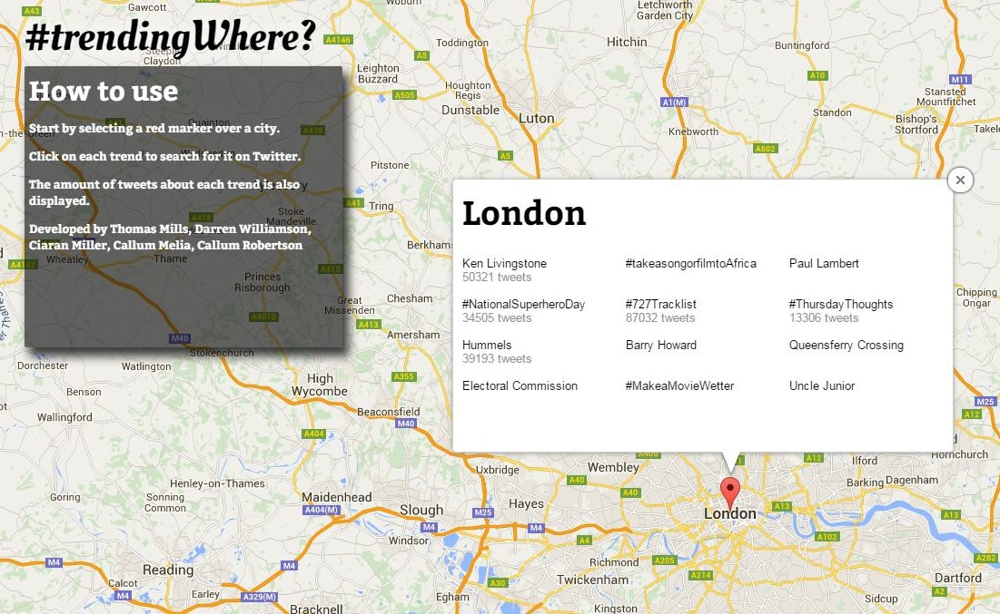
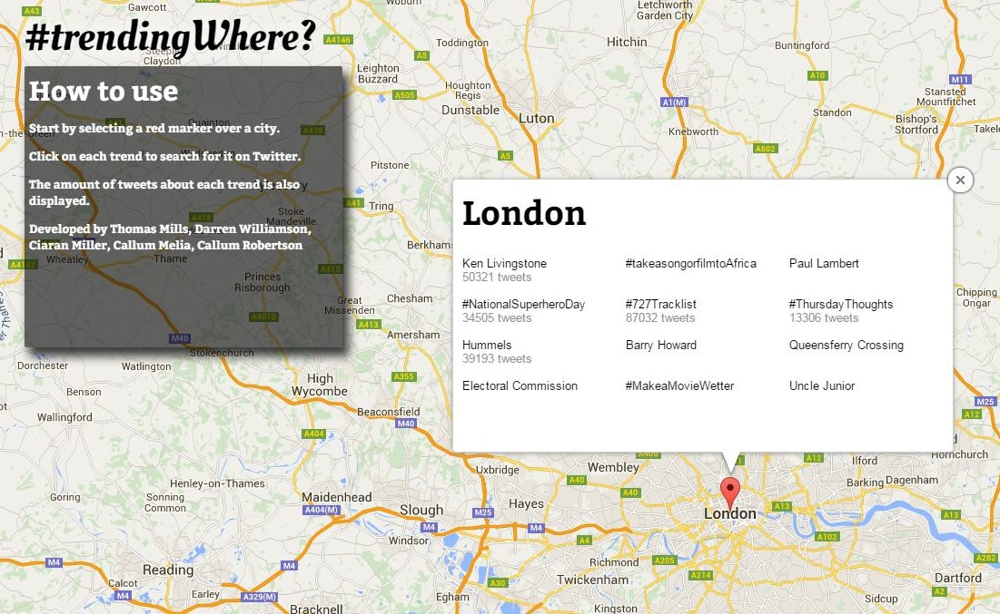

#trendingWhere?
Explore trending topics of cities around the world!

Explore trending topics of cities around the world!

- Pan across the map by clicking and dragging your mouse.
- Select your chosen city by clicking on the marker.
- The top 12 trending topics for that city will be displayed.
- Get started by clicking the button below!